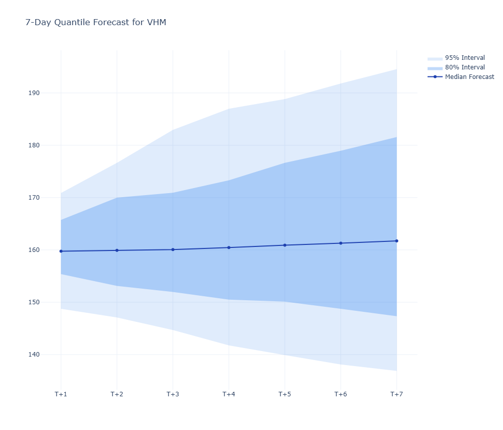

Tổng quan
Agentic Stock Forecasting System là một hệ thống nghiên cứu định lượng được hỗ trợ bởi AI Agent, kết hợp giữa mô hình Machine Learning truyền thống và khả năng suy luận của Large Language Model. Thay vì chỉ tạo ra một con số dự báo đơn lẻ, hệ thống xây dựng một pipeline hoàn chỉnh để thu thập dữ liệu thị trường, tạo đặc trưng kỹ thuật, dự báo theo nhiều phân vị, giám sát độ ổn định của mô hình và sinh báo cáo nghiên cứu tự động.
Mục tiêu chính của dự án không phải là xây dựng bot giao dịch tự động, mà là phát triển một nền tảng hỗ trợ nghiên cứu tài chính có khả năng đánh giá chất lượng mô hình, phát hiện bối cảnh thị trường thay đổi và đề xuất tinh chỉnh mô hình khi hiệu năng suy giảm. Đây là một hướng tiếp cận gần với MLOps trong tài chính: mô hình không chỉ được huấn luyện một lần, mà được theo dõi, đánh giá và cải thiện theo dữ liệu mới.
Điểm nổi bật của dự án nằm ở việc kết hợp LightGBM Quantile Regression với LangGraph Agentic Workflow. Mô hình chịu trách nhiệm dự báo xác suất, trong khi AI Agent đóng vai trò như một lớp điều phối thông minh: đọc metric, kiểm tra drift, phân tích regime, tìm kiếm tin tức, đề xuất cấu hình mới và tạo audit trail cho toàn bộ quyết định.
Các công cụ và công nghệ
- Ngôn ngữ lập trình: Python
- Mô hình dự báo: LightGBM Quantile Regression
- Agentic Workflow: LangGraph, Gemini API, prompt templates, state machine
- Xử lý dữ liệu: Pandas, NumPy, SQLite, vnstock API
- Feature Engineering: RSI, MACD, ATR, ROC, moving averages, lag features, volatility features
- Monitoring: Drift Detection, Regime Detection, Risk Engine
- Đánh giá mô hình: Walk-forward validation, MAE, RMSE, MAPE, sMAPE, Directional Accuracy, Pinball Loss, Interval Coverage
- Báo cáo: Markdown, HTML, JSON, Plotly visualization
Kiến trúc hệ thống
Hệ thống được thiết kế theo dạng pipeline nhiều tầng, trong đó mỗi module đảm nhiệm một trách nhiệm riêng biệt: tầng ingestion thu thập dữ liệu thị trường, tầng processing làm sạch và tạo đặc trưng, tầng modeling thực hiện huấn luyện và dự báo, tầng monitoring đánh giá bối cảnh, còn tầng agent điều phối việc đánh giá và tự cải thiện cấu hình mô hình.
Cấu trúc này giúp dự án dễ mở rộng, dễ debug và phù hợp với tư duy production-oriented. Thay vì để toàn bộ logic nằm trong một notebook đơn lẻ, các thành phần như data ingestion, feature engineering, validation, monitoring, agent workflow và reporting được tách thành từng module độc lập.
Quy trình hoạt động
Toàn bộ hệ thống được khởi chạy từ entry point main.py. Pipeline nhận mã cổ phiếu mục tiêu, sau đó tự động thực hiện các bước từ thu thập dữ liệu đến sinh báo cáo cuối cùng.
- Data Ingestion: lấy dữ liệu OHLCV lịch sử của cổ phiếu mục tiêu và dữ liệu bối cảnh thị trường như VN30, VN30F1M.
- Feature Engineering: tính toán các đặc trưng kỹ thuật, rolling features, lag features và biến động khối lượng.
- Modeling & Validation: huấn luyện LightGBM Quantile Regression và đánh giá bằng walk-forward validation.
- Forecasting: dự báo 7 ngày tiếp theo theo nhiều phân vị nhằm thể hiện vùng bất định của mô hình.
- Monitoring: phát hiện drift, phân loại regime thị trường và tính toán rủi ro tài chính từ forecast quantiles.
- Agentic Evaluation: AI Agent đọc toàn bộ context, đánh giá trạng thái mô hình và quyết định có cần tìm tin tức, retrain hoặc giữ nguyên cấu hình hay không.
- Final Reporting: tổng hợp forecast, metrics, monitoring report, news context và audit trail thành báo cáo Markdown, HTML và JSON.
Dữ liệu và tiền xử lý
Hệ thống sử dụng dữ liệu thị trường Việt Nam được lấy thông qua API vnstock, bao gồm dữ liệu OHLCV trong khoảng hai năm cho mã cổ phiếu mục tiêu.
Bên cạnh đó, dự án còn bổ sung dữ liệu bối cảnh từ VN30 và VN30F1M nhằm giúp mô hình nhận biết trạng thái chung của thị trường.
Dữ liệu thô được lưu lại dưới dạng CSV snapshot và trong SQLite database để thuận tiện cho việc kiểm tra, debug và tái lập kết quả. Sau đó, pipeline xử lý dữ liệu sẽ merge dữ liệu cổ phiếu với bối cảnh thị trường, xử lý missing values, loại bỏ các dòng bị NaN do rolling window hoặc lag features và lưu bảng đã xử lý theo từng mã cổ phiếu.
Các đặc trưng được xây dựng không chỉ dựa trên giá tuyệt đối mà còn dựa trên tỷ suất lợi nhuận, biến động khối lượng, xu hướng giá, volatility và các chỉ báo phân tích kỹ thuật. Điều này giúp mô hình nắm bắt tốt hơn cả thông tin ngắn hạn lẫn bối cảnh thị trường rộng hơn.
Mô hình dự báo xác suất
Thay vì dự báo một giá trị duy nhất, hệ thống sử dụng LightGBM Quantile Regression để dự báo nhiều phân vị của phân phối giá tương lai.
Các phân vị chính gồm q_0.025, q_0.1, q_0.5, q_0.9 và q_0.975.
Trong đó, q_0.5 đóng vai trò là dự báo trung vị, còn các phân vị thấp và cao tạo thành dải bất định của forecast.
Cách tiếp cận này phù hợp hơn với dữ liệu tài chính vì thị trường luôn tồn tại rủi ro và sự không chắc chắn, đặc biệt trong các giai đoạn biến động mạnh.
Để đánh giá khách quan theo thời gian, dự án áp dụng walk-forward validation. Thay vì chia train/test ngẫu nhiên, mô hình được huấn luyện trên dữ liệu quá khứ và validate trên giai đoạn tương lai gần. Điều này giúp hạn chế rò rỉ thông tin tương lai và phản ánh sát hơn cách mô hình sẽ hoạt động trong thực tế.

Forecast theo nhiều phân vị, giúp thể hiện cả dự báo trung vị lẫn vùng bất định của giá trong tương lai.
Monitoring: Drift, Regime và Risk
Một điểm quan trọng của dự án là hệ thống không chỉ dừng lại ở việc tạo forecast. Sau khi có kết quả dự báo và validation metrics, pipeline tiếp tục chạy các monitoring engine để mô tả bối cảnh thị trường và phát hiện dấu hiệu mô hình có thể đang suy giảm hiệu năng.
- Regime Detector: phân loại thị trường theo xu hướng, độ biến động và trạng thái thanh khoản. Hệ thống có thể nhận diện các trạng thái như uptrend, downtrend, sideways, high volatility hoặc volume spike.
- Drift Detector: so sánh dữ liệu hiện tại với dữ liệu tham chiếu để phát hiện feature drift, target drift và concept drift. Các chỉ số như mean shift Z-score, standard deviation ratio và PSI được dùng để đánh giá mức độ lệch phân phối.
- Risk Engine: tính toán expected return, downside risk, upside potential, VaR, Expected Shortfall và risk/reward ratio từ các forecast quantiles.
Các monitoring engine này không trực tiếp ra quyết định giao dịch. Vai trò chính của chúng là cung cấp context định lượng để Agent hiểu mô hình đang hoạt động trong môi trường thị trường như thế nào.
Agentic Workflow bằng LangGraph
Sau khi pipeline tạo đủ forecast, metrics và monitoring reports, toàn bộ thông tin được đóng gói vào AgentState.
LangGraph sau đó điều phối workflow qua nhiều node, mỗi node đảm nhiệm một hành động cụ thể.
- node_fix_quantiles: kiểm tra và sửa lỗi quantile crossing để đảm bảo các dải dự báo hợp lệ về mặt toán học.
- node_llm_evaluate: LLM đọc validation metrics, drift, regime và risk context để đánh giá trạng thái mô hình là OK hoặc BAD.
- node_search_news: khi mô hình có dấu hiệu kém ổn định, Agent tìm kiếm tin tức liên quan đến mã cổ phiếu qua Google News RSS để bổ sung bối cảnh.
- node_llm_retrain_compare: LLM đề xuất cấu hình LightGBM mới, hệ thống retrain bằng Python, đánh giá lại bằng walk-forward validation và so sánh với cấu hình cũ.
- Self-Reflection: nếu cấu hình mới không tốt hơn, hệ thống lưu lại rejected config để Agent tránh lặp lại lựa chọn kém hiệu quả trong vòng thử tiếp theo.
Cơ chế này giúp dự án vượt ra khỏi mô hình ML truyền thống. Agent không thay thế hoàn toàn logic định lượng, mà đóng vai trò như một lớp điều phối và giải thích, kết hợp reasoning của LLM với các kiểm chứng khách quan bằng code.
Kết quả đạt được
Dự án xây dựng được một pipeline nghiên cứu tài chính end-to-end, có khả năng chạy tự động từ dữ liệu thô đến báo cáo cuối cùng. Kết quả đầu ra không chỉ gồm forecast, mà còn bao gồm validation metrics, phân tích drift, regime, risk, news context, quyết định cấu hình mô hình và audit trail của agentic workflow.
- Dự báo 7 ngày tiếp theo theo nhiều phân vị, phản ánh cả kỳ vọng trung vị và vùng rủi ro.
- Đánh giá mô hình bằng walk-forward validation để phù hợp với bản chất chuỗi thời gian tài chính.
- Phát hiện drift và regime giúp theo dõi sự thay đổi của thị trường theo thời gian.
- Tích hợp Risk Engine để chuyển forecast thành các chỉ số tài chính dễ diễn giải hơn.
- Xây dựng Agentic Workflow có khả năng đánh giá, retrain, so sánh config và ghi lại audit trail.
- Sinh báo cáo đầu ra ở nhiều định dạng như Markdown, HTML và JSON.
Final action của hệ thống có thể là BUY, SELL, HOLD hoặc WATCH. Tuy nhiên, kết quả này được định nghĩa như một research output hoặc paper-trading signal, không phải khuyến nghị đầu tư hay tín hiệu giao dịch thực tế.
Thách thức và giải pháp
- Dữ liệu tài chính biến động mạnh: Giá cổ phiếu thay đổi theo thời gian và chịu ảnh hưởng bởi nhiều yếu tố ngoài dữ liệu lịch sử. Dự án sử dụng walk-forward validation, regime detection và drift monitoring để đánh giá mô hình theo bối cảnh động.
- Dự báo điểm không đủ để mô tả rủi ro: Một giá trị dự báo duy nhất không thể hiện được mức độ bất định. Vì vậy, hệ thống dùng Quantile Regression để tạo nhiều phân vị và tính toán VaR, Expected Shortfall, downside risk từ các dải dự báo.
-
Quantile crossing:
Các phân vị đôi khi có thể bị sai thứ tự, ví dụ phân vị thấp lại cao hơn phân vị trung vị.
Node
node_fix_quantilesđược thêm vào workflow để kiểm tra và sửa lỗi này trước khi tạo báo cáo. - LLM có thể đề xuất cấu hình không tốt: Mọi đề xuất của Agent đều được kiểm chứng lại bằng retraining và walk-forward validation. Nếu cấu hình mới không cải thiện hiệu năng, hệ thống từ chối thay đổi và lưu lại rejected config cho vòng self-reflection.
- Cần khả năng audit và giải thích: Dự án sinh báo cáo cuối cùng kèm context, quyết định cấu hình và audit trail để người đọc có thể hiểu vì sao hệ thống đưa ra hành động nghiên cứu cuối cùng.
Hướng phát triển
Trong tương lai, dự án có thể được mở rộng theo nhiều hướng để tiến gần hơn đến một nền tảng nghiên cứu định lượng hoàn chỉnh:
- Bổ sung thêm nhiều mã cổ phiếu và benchmark cross-sectional giữa các nhóm ngành.
- Tích hợp backtesting module để đánh giá paper-trading signal theo thời gian.
- Mở rộng news engine với nhiều nguồn dữ liệu hơn thay vì chỉ dùng Google News RSS.
- Xây dựng dashboard theo dõi forecast, drift, risk và agent decisions theo thời gian thực.
- Bổ sung model registry và experiment tracking để quản lý phiên bản cấu hình mô hình tốt hơn.
- Tăng cường guardrails cho LLM để kiểm soát chặt hơn phạm vi đề xuất tham số và giảm rủi ro hallucination.